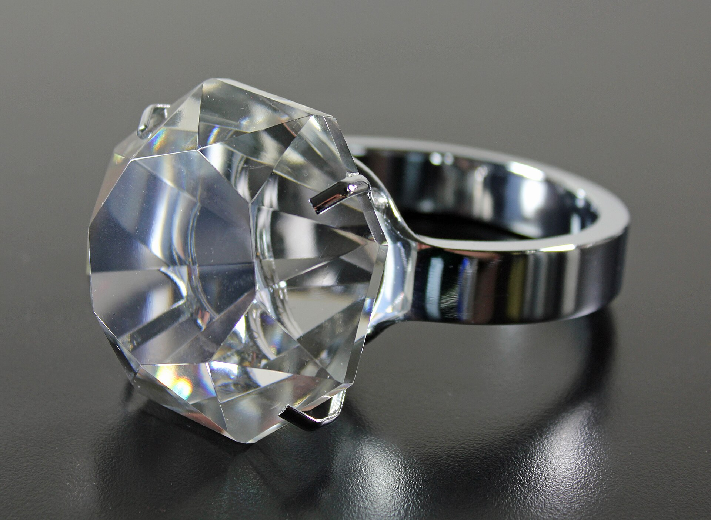
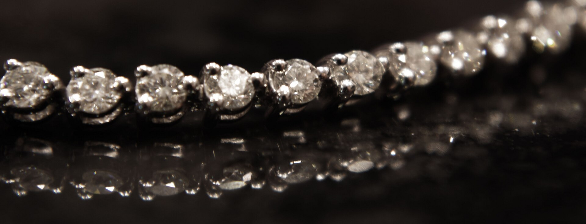
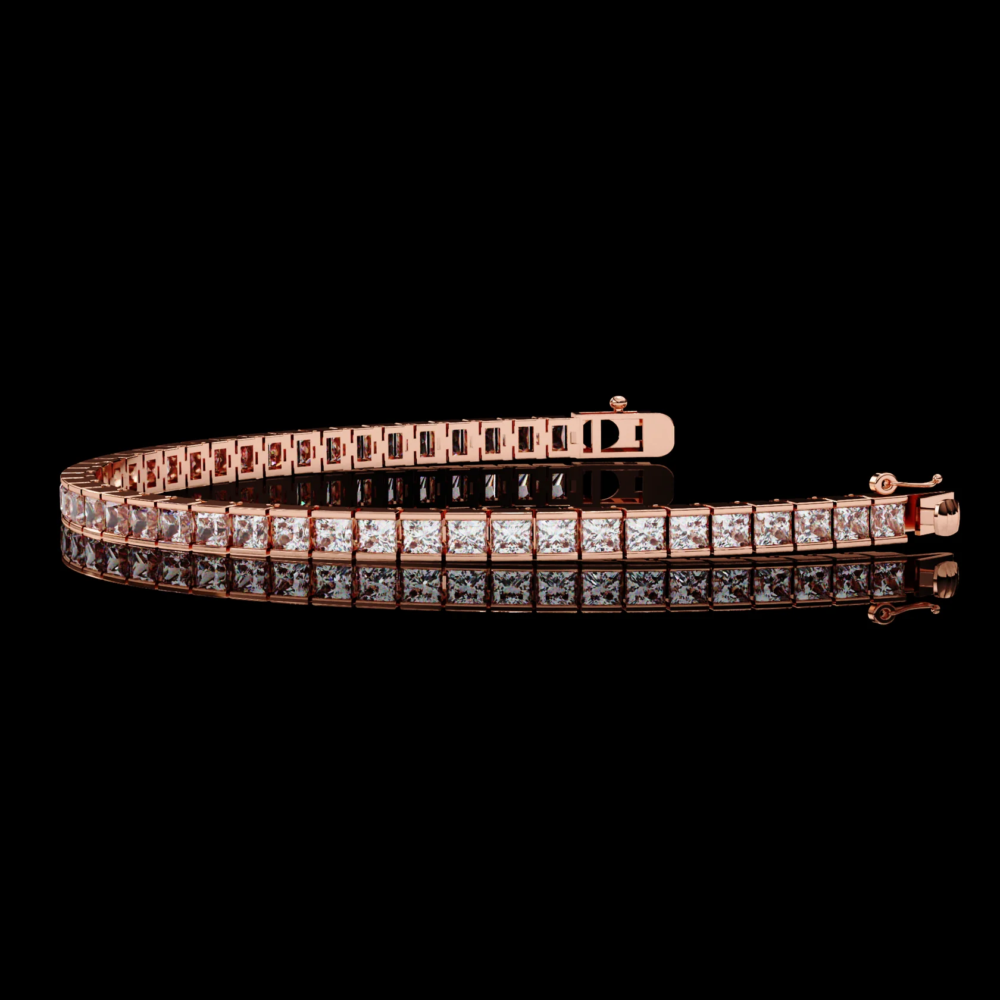
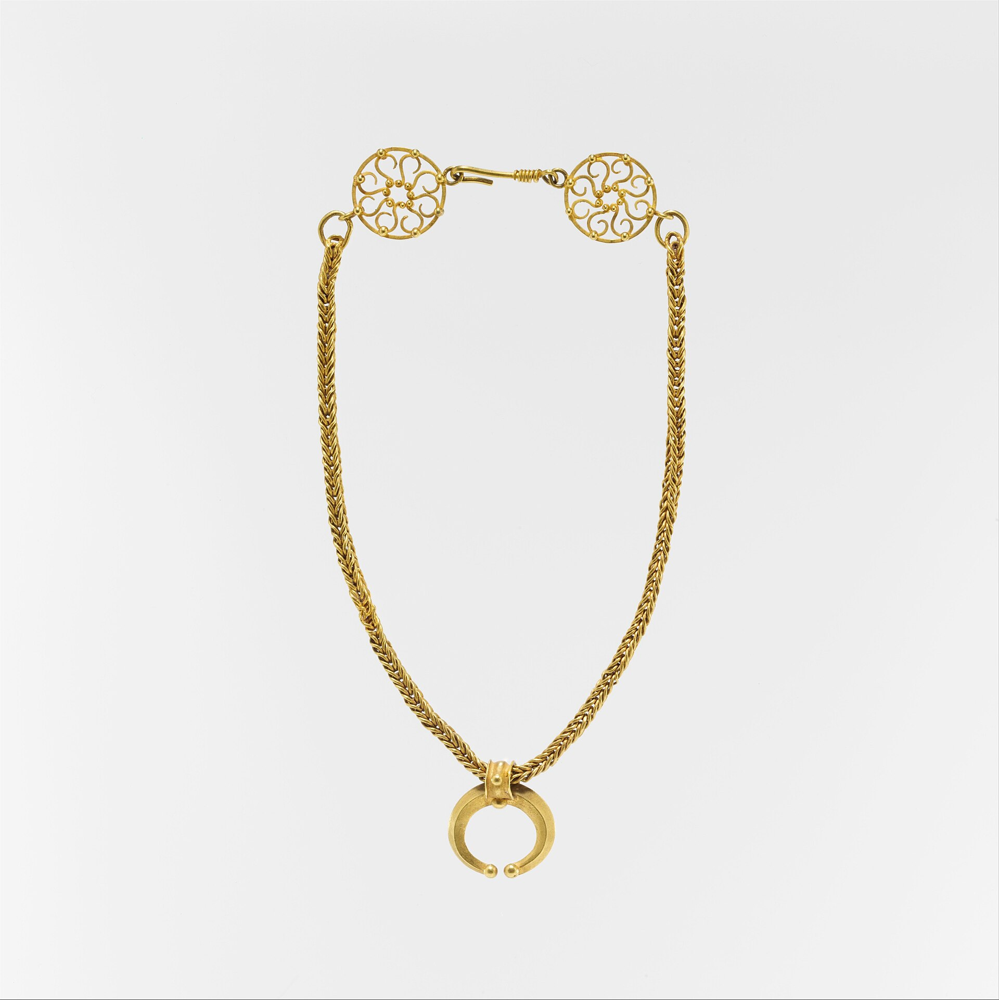
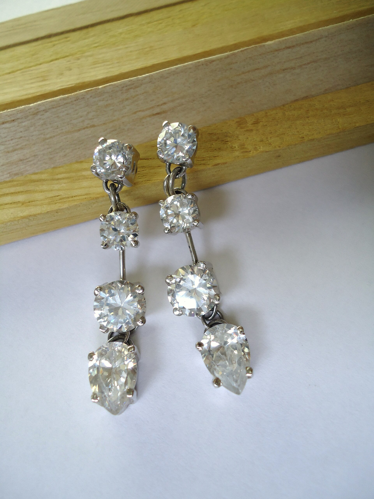

Alliances
Alliance Prestige
Duo d'alliances or jaune, finition polie, gravure personnalisée.
Or, diamants et pierres fines.
Duo d'alliances or jaune, finition polie, gravure personnalisée.

Solitaire central épaulé de deux diamants navette.

Grande pierre taillée à facettes sur anneau poli.

Jonc or à micro-mosaïque, pièce de caractère.

Ligne continue de diamants sertis, d'une grande fluidité.

Maillons délicats et brillance discrète au poignet.

Pendentif aux pierres de couleur, présenté en écrin.

Perles de culture nacrées, fermoir argent.

Chaîne or tressée, pendentif croissant, rosaces ajourées.

Or blanc et diamants en chute, taille poire.
Photographies et modèles présentés à titre d'illustration.